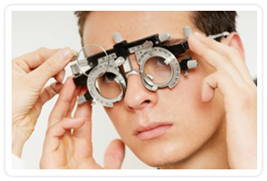

«Центр Микрохирургии Глаза Макарчука» - современный хирургический медицинский центр, в котором вы можете пройти полную диагностику глазных болезней взрослых и детей, выполнить любые виды хирургических офтальмологических вмешательств. Учреждение образовано в 2013 году, оснащено безопасным современным, передовым диагностическим, а также хирургическим оборудованием ведущих мировых производителей.
Видеовизитка ЦМХГ Макарчука
Лечение и диагностика
В нашем офтальмологическом центре Вы можете рассчитывать на помощь по следующим
направлениям:
- Всесторонняя диагностика органа зрения;
- Подбор средств коррекции;
- Хирургическое лечение катаракты (бесшовным и безболезненным методом);
- Лечение глаукомы (терапевтическая и микрохирургическая помощь);
- Витреоретинальная хирургия (патология сетчатки, стекловидного тела, болезни макулярной области и др.).
Обследование и лечение в Центре проводится офтальмологами – профессионалами в своей области. Диагностика производится на лучшем современном оборудовании.
При обращении в наш Центр Вы получите индивидуальный подход и схему лечения. Прием производится в удобное для Вас время, по предварительной записи.
-
Удаление катаракты
С развитием заболевания все острее ощущается мелькание перед глазами полосок, штрихов и пятен, ореолы вокруг пред метов при ярком свете, светобоязнь, двоение изображения. Часто возникают затруднения ...
Подробнее... -
Микрохирургия
Микрохирургия представляет собой отдель ный раздел хирургии, занимающийся опера тивным лечением малых по размеру струк тур организма человека, которые зачастую недоступны невооруженному глазу. Все ...
Подробнее... -
 Фотокоагуляция сетчатки
Фотокоагуляция сетчаткиЛазерная коагуляция сетчатки применяется при периферических и центральных дис трофиях сетчатки, сосудистых поражениях. Также лазерная коагуляция сетчатки предотвращает развитие дистрофий и пре пятствует ...
Подробнее... -
Подбор очков
Если вы хотите купить приглянувшуюся Вам оправу в метро или в киоске, не отка зывайте себе в этом. Но если вам тут же предлагают очки с установленными стек лами соответствующими вашим диоп триям ...
Подробнее...
Врачи центра
Врачи центра настоящие профессионалы с многолетним опытом, готовые оказать самую квалифицированную помощь в области офтальмологии. В нашей клинике Вы получите профессиональную и подробную консультацию касаемо диагностики и лечения всех форм глазных заболеваний. Персонал клиники заботится о том, чтобы процесс лечения проходил для Вас максимально комфортно, а эффект его был максимально длительным.
-
Макарчук Константин Васильевич
Врач-офтальмолог/хирург первой квалифи кационной категории. Стаж работы более 9 лет. Закончил лечебный факультет Бело русского государственного медицинского университета ...
Подробнее... -
Пекарская Ирина Валерьевна
Врач-офтальмолог. В 2012 году окончила ле чебный факультет Белорусского государст венного медицинского университета. С 2012 года проходила интернатуру по специаль ности офтальмология ...
Подробнее... -
 Ревинская Елена Тадеушевна
Ревинская Елена ТадеушевнаОпытный врач-офтальмолог. Родилась в 1961 году. В 1983 году закончила лечебный факуль тет Гродненского государственного медицинс кого института. С 01.08.1983 по 01.08.1984 ра ботала врачом ...
Подробнее...